suivant: Bibliographie
monter: Un autre problème pas intuitif pour un sou
précédent: Réponse juste, expliquée intuitivement
Pour simplifier nous résolvons le problème dans le cas présenté dans l'ennocé. Le
prisonnier choisit la première porte et le geolier montre l'échafaud derrière la porte 3. Ce choix ne
nous fait pas perdre en généralité et simplifie les notations.
En probabilité, pour ne pas se tromper dans un exercice ou l'intuition est mise en
défault, la méthode est de tout bien écrire. Notons 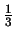
l'hypothèse ``la liberté est derrière la porte
numéro i''. Le but du prisonnier étant de trouver le dont la probabilité a posteriori est maximale.
L'énnoncé sous-entend les probabilités a priori suivantes :
Notons 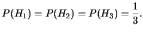
le
numéro de la porte ouverte par le geolier. Si la bonne porte était la 1ère, le geolier peut choisir
entre les deux autres, sinon il n'a pas le choix. Ceci s'écrit :
-
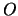
-
-
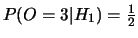
-
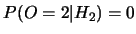
-
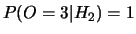
-
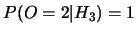
Comme on a 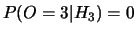
, il
suffit de maximiser sur 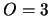
:
Ce n'est même pas la peine de faire le calcul complet car comme 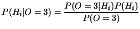
et 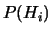
ne dépandent pas de , il suffit de trouver le maximisant
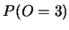
. Les valeurs sont
respectivenemt
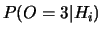
pour 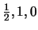
. Donc il 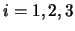
est deux fois plus probable que 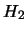
. Il faut changer de porte.
Si on veut faire le calcul quand même, on peut calculer que l'on peut appeller constante de normalisation.
Ce qui donne:
suivant: Bibliographie
monter: Un autre probleme pas
précédent: R�ponse juste, expliqu�e intuitivement
Pierre Dangauthier
2004-10-18